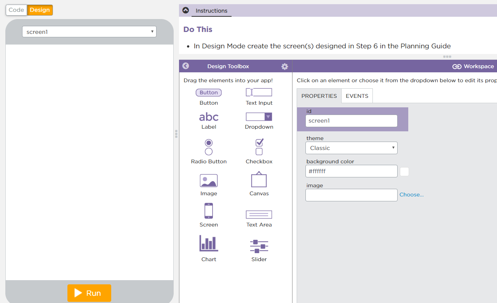

Today you will build the app you planned, one level at a time, and practice debugging when something goes wrong.

Open Lesson 12, Level 3 on Code.org.
Keep your planning guide open beside you. Yesterday’s plan is today’s instructions: your variables table, your flowchart, and your screen sketch.
Level 3Build your screen in Design Mode.
Level 4Create the variables from your planning guide.
Level 5Create the function that updates the screen.
Level 6Add an onEvent for every input.
Test after every level. A small problem is much easier to find right after you make it.
Build the screen you sketched in Step 6. Drag in an element for every input and a place for the output.
Give each element a clear id before you write any code, like nameInput, typeDropdown, and resultOutput. Your code has to use these ids exactly, including capital letters.
Add a label beside each input so the user knows what it is for, and set the dropdown’s options to the choices your conditional will check.
Create a variable at the top of your program for each row of your Step 4 table.
Start each one with the value its input shows when the app opens, so the first screen makes sense. price starts at the number 20; type starts at the string "Italian".
Use var only here, once for each variable.
// What the decision needs
var name = "";
var type = "Italian";
var price = 20;Write an updateScreen function. It uses your flowchart’s if-else-if to make the decision, then shows it.
Start it with a comment that explains its purpose (what it does) and its functionality (how it does it).
// Recommends a restaurant. An if-else-if checks
// the type and price, then setText shows the answer.
function updateScreen() {
var place;
if (type == "Italian" && price <= 20) {
place = "Bizzaro's";
} else if (type == "Italian") {
place = "Trattoria Rosa";
} else if (type == "Mexican") {
place = "Casa Lupita";
} else {
place = "the diner";
}
setText("resultOutput", name + ", try " + place);
}Add an onEvent for every input. Each one stores the new value in its variable, then calls updateScreen.
Call updateScreen once after your variables too, so the screen is right before the user touches anything.
updateScreen();
onEvent("typeDropdown", "change", function() {
type = getText("typeDropdown");
updateScreen();
});
onEvent("upButton", "click", function() {
price = price + 5;
updateScreen();
});Your app has three inputs. Where should updateScreen() be called so the screen is always up to date?
Debugging is the process of finding and fixing problems in code. Work through it in this order instead of changing things at random.
Level 3Build your screen in Design Mode.
Level 4Create the variables from your planning guide.
Level 5Create the function that updates the screen.
Level 6Add an onEvent for every input.
When something goes wrong, use the same moves: read the console, add a console.log, and compare your ids with Design Mode.
Describe one bug you found today. What did you expect, what actually happened, and how did you find the cause?